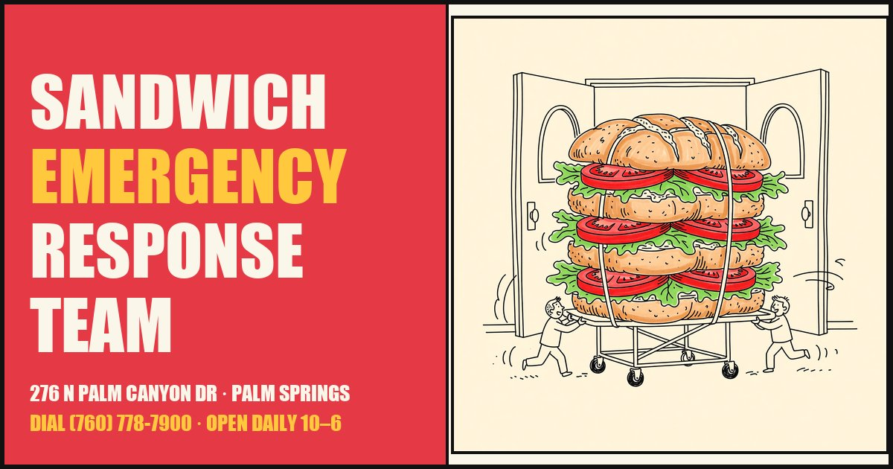
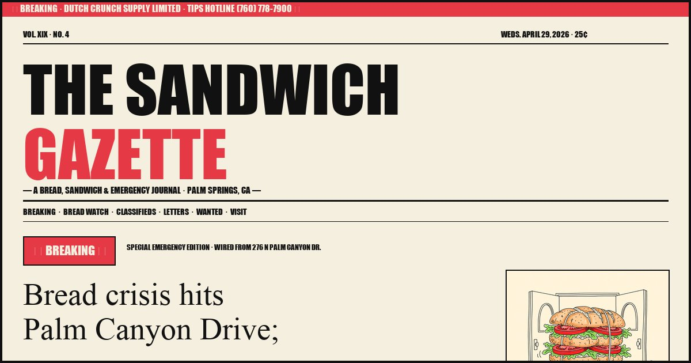

You picked the comedic direction. Here are two ways to live it — same brand voice, same palette, same doodles, same Doctor Dena. Different visual language. V1 reads like a 911 dispatch poster taped to the door. V2 reads like a Wednesday broadsheet that someone left on the counter.
— pick whichever makes you laugh harder.

— the 911 hotline that happens to make sandwiches
Newbrutalist + anti-polish hand-drawn collage. Anton screams. Caveat scribbles. Doctor Dena annotates the menu. Reviews are taped on like newspaper clippings.

— the broadsheet of record covering the only emergency that matters
Vintage newspaper front-page treatment. DM Serif Display headlines. Multi-column lead story. Classifieds-as-menu. WANTED poster for Doctor Dena. Weather forecast. Tennis index.
Same brand. Same palette. Same Doctor Dena. The whole joke is in the typeface and the layout.
The editorial 1962 vintage-magazine take. Cream and terracotta, Cormorant headlines, Dutch Crunch infographic deep-dive, Palm Springs Hall of Fame sidebar. Kept live for reference, not in contention.
VIEW ARCHIVED DIRECTION B →